Conheça as espécies nativas, protegidas e invasoras do nosso rio
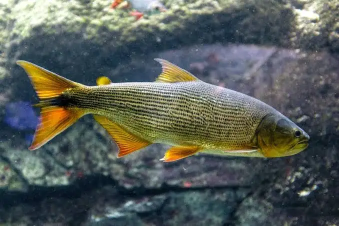
Predador topo de cadeia, conhecido como o "Rei do Rio".
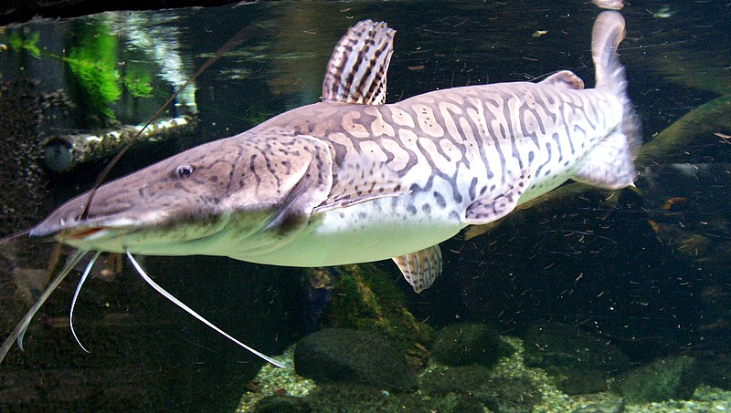
Siluriforme (bagre) de grande porte e valor comercial/esportivo.
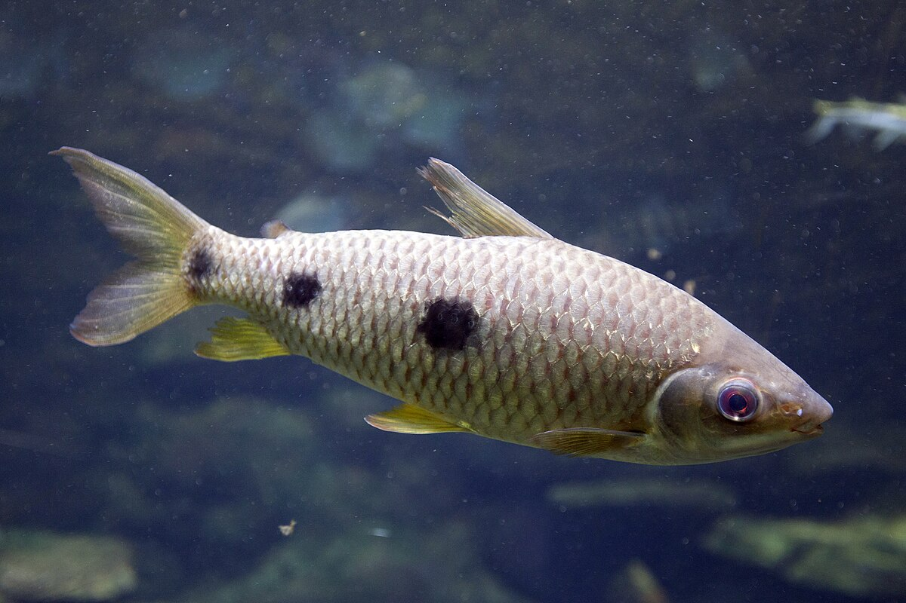
Peixe migrador importante, parte da família dos piau.
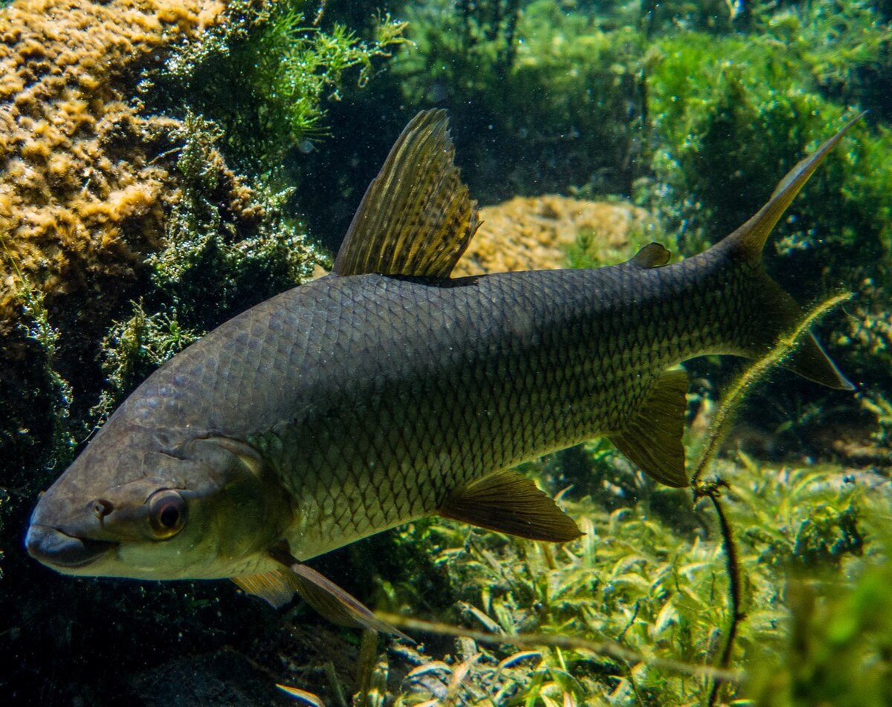
Peixe migrador essencial para a limpeza do leito do rio.
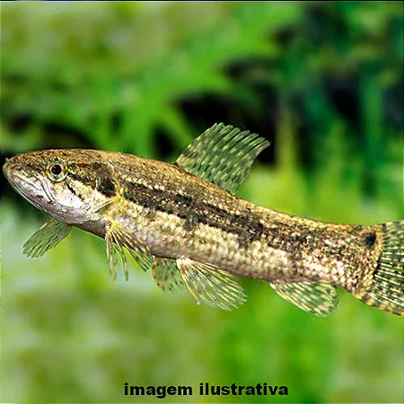
Predador de emboscada, resistente e amplamente distribuído.
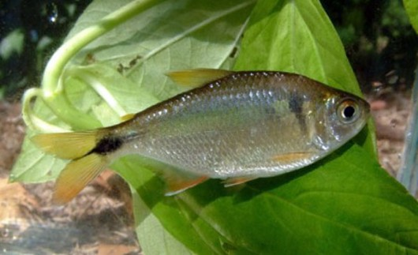
Pequeno peixe que serve de base para toda a cadeia alimentar.
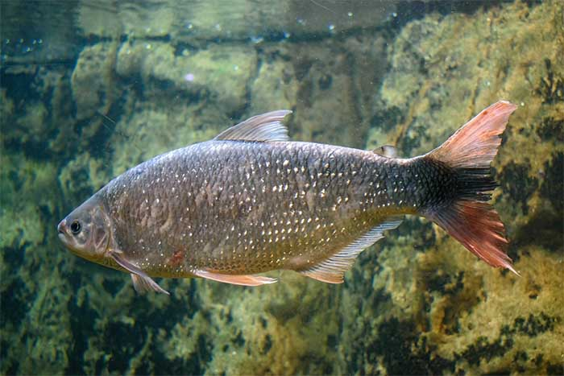
**CRITICAMENTE AMEAÇADA.** Um dos principais alvos de conservação.
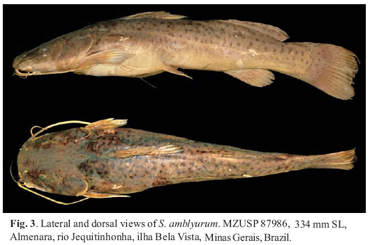
**AMEAÇADA (Em Perigo - EN).** Bagre de grande porte.
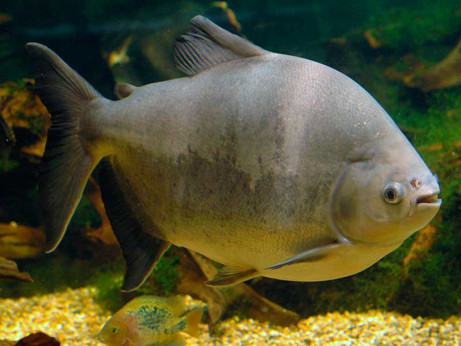
Espécie frugívora importante, frequentemente com pesca restrita.
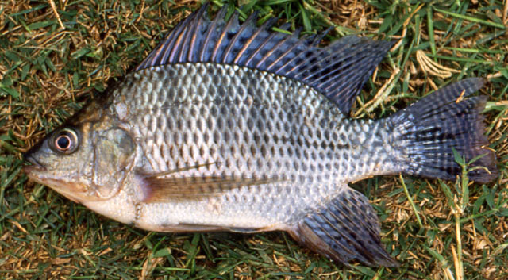
Espécie africana, uma das mais disseminadas e nocivas.
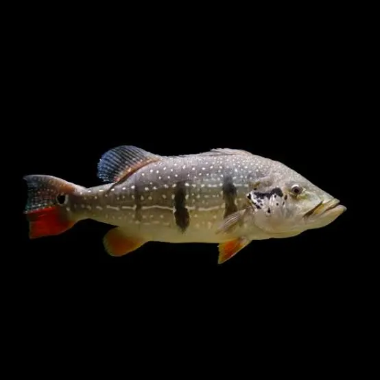
Predador introduzido para pesca esportiva, ameaça alevinos nativos.
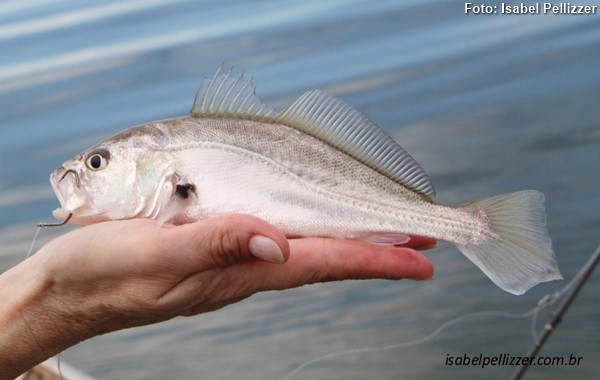
Introduzida para aquicultura, estabeleceu-se como predador dominante.
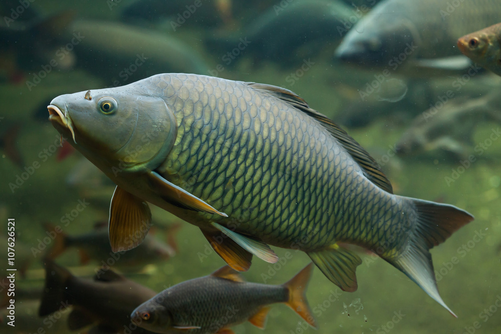
Espécie originária da Europa/Ásia, afeta o fundo do rio.